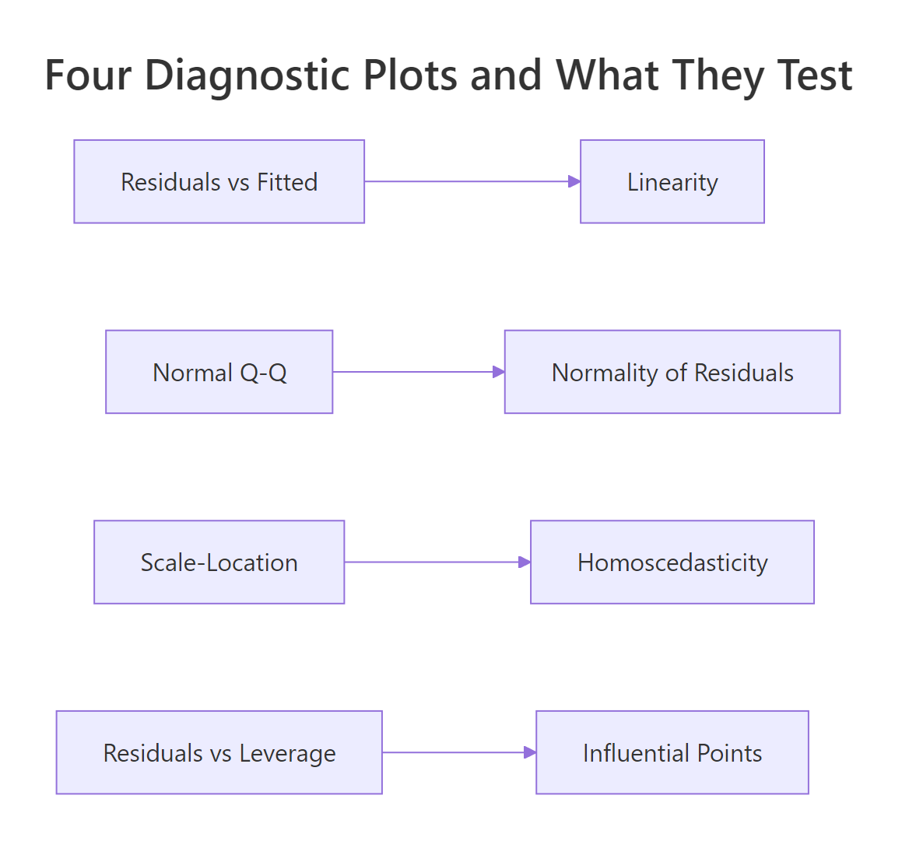
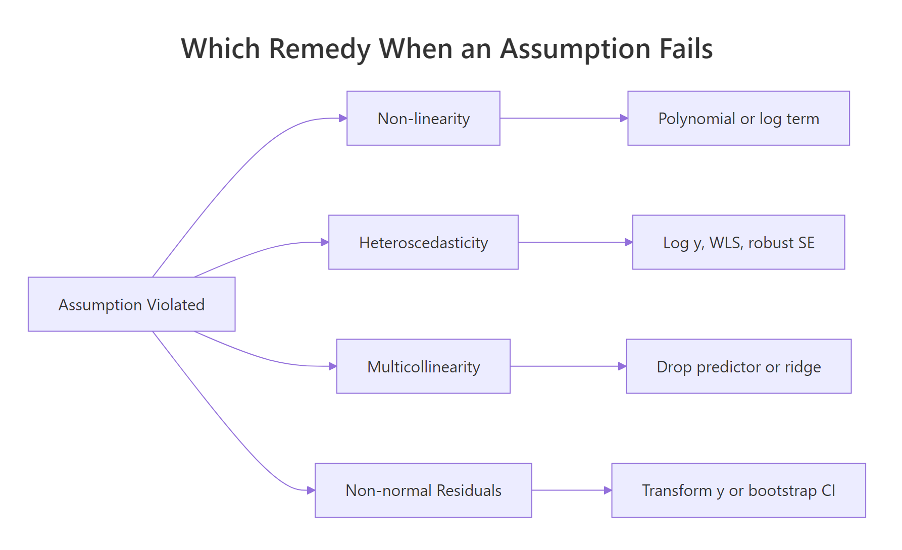
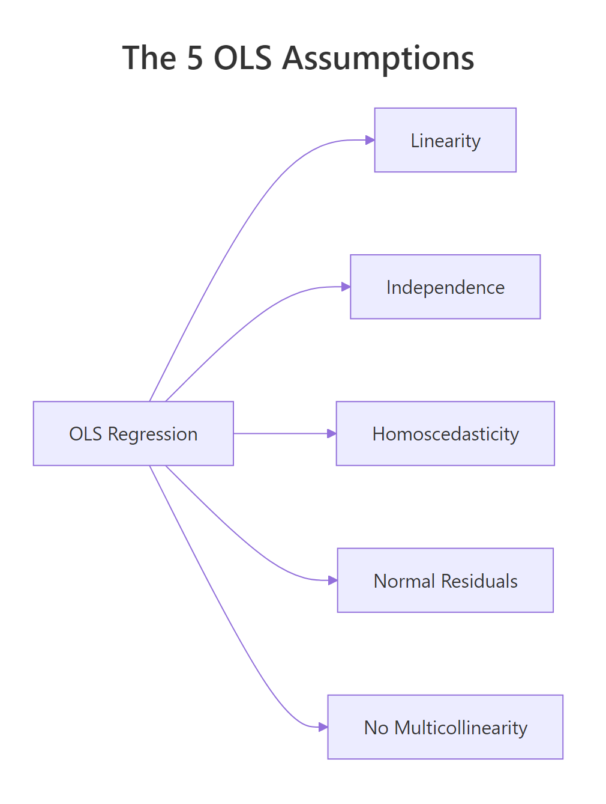

Linear Regression Assumptions in R: Test All 5 and Know What to Do When They Fail
Linear regression in R relies on five assumptions: linearity, independence of errors, homoscedasticity, normality of residuals, and no multicollinearity. When any one of them breaks, your coefficients, standard errors, and p-values become unreliable, so every assumption needs both a diagnostic test and a known fix. This post shows all five using base R so every code block runs in your browser.
Why do the 5 linear regression assumptions matter?
Ordinary least squares (OLS) returns unbiased slopes only when its assumptions hold. Violate linearity and your predictions curve away from the truth; violate homoscedasticity or independence and the standard errors lie, so p-values stop being trustworthy. Violate the no-multicollinearity condition and individual coefficients swing wildly even when overall fit looks fine. The fastest way to inspect all of this at once is the four-plot diagnostic panel R produces when you call plot() on a fitted model.
par(mfrow = c(2, 2)) arranges all four plots in a single 2x2 grid for scanning at a glance.
One line of code produced the entire dashboard. The top-left (Residuals vs Fitted) tests linearity, the top-right (Q-Q) tests normality of residuals, the bottom-left (Scale-Location) tests homoscedasticity, and the bottom-right (Residuals vs Leverage) surfaces influential points. Our R² is 0.83, which feels great, but that number tells you nothing about whether the inferences from this model are valid. That question is what the assumptions answer.

Figure 1: Each of the four diagnostic plots tests a different assumption.
Try it: Fit Petal.Length ~ Sepal.Length + Sepal.Width on the built-in iris dataset, then run plot() to see the same 4-panel dashboard.
Click to reveal solution
Explanation: lm() fits the model and plot() dispatches to plot.lm(), which renders the same four diagnostic plots for any linear model.
How do you test linearity (and what if it fails)?
Linearity means the true relationship between each predictor and the response is a straight line. You don't check this by squinting at scatterplots of y against each x; you check it with the Residuals vs Fitted plot. If the assumption holds, residuals should scatter randomly around zero with no visible trend. A U-shape, arch, or curve means the model missed a nonlinear pattern.
Let's isolate the first diagnostic plot from our fit model. Passing which = 1 asks plot.lm() for just the Residuals vs Fitted panel.
The red curve overlaid on the points is a LOWESS smoother. If linearity holds, that curve should hug the dashed zero-line. A subtle dip near the middle of the fitted-value range, like the one you'll see with this mtcars model, hints that the linear fit is slightly off in the middle of the mpg range, but it's not severe.
Let's look at what severe non-linearity looks like, by simulating data where the true relationship is quadratic.
The smoother now traces a smile shape rather than a flat line. That U-shape tells you a single linear term in x_nl cannot explain the curved relationship, leaving structure the model missed.
The fix is to add the missing curvature back into the model. Use poly(x, 2) to add a quadratic term in a numerically stable way.
The smile flattens out. Adding the squared term gave the model the flexibility to follow the true curve, so the residuals are pure noise again.
x and x^2 highly correlated, which inflates VIF and destabilizes coefficients. poly() returns orthogonal polynomials, so each term is uncorrelated with the others.Try it: Add a quadratic disp term to the original mtcars model with poly(disp, 2) and re-plot Residuals vs Fitted. Does the smoother flatten?
Click to reveal solution
Explanation: Adding poly(disp, 2) lets the model bend with the true displacement-mpg curve, so the residual pattern flattens.
How do you check independence of residuals in R?
Independence means each residual carries no information about its neighbors. The classic risk is time-ordered data, where today's error correlates with yesterday's, but the assumption can also break for spatially clustered data or repeated measures. The standard formal test is the Durbin-Watson test from the lmtest package, which targets first-order autocorrelation.
We'll load lmtest once for this section and the next.
The Durbin-Watson statistic ranges from 0 to 4. A value near 2 means no autocorrelation; values below 1.5 suggest positive autocorrelation; values above 2.5 suggest negative. Here DW is 1.36 with p = 0.019, so we reject independence, but mtcars is just an arbitrary row order, so this DW result is a false alarm. DW only makes sense when row order has meaning (time, space, or measurement sequence).
To see what real autocorrelation looks like, let's simulate residuals where each error depends on the previous one.
DW collapsed toward zero and the p-value is microscopic, exactly the signature of strong positive autocorrelation. The fix is to model the time structure directly: switch to a gls() fit with an AR(1) error structure (nlme::gls), use Newey-West standard errors (sandwich::NeweyWest), or move to a proper time-series model.
Try it: Run dwtest() on the model lm(Ozone ~ Solar.R + Wind, data = airquality). Note that airquality is time-ordered (daily readings).
Click to reveal solution
Explanation: The airquality dataset records consecutive days, so DW is meaningful here and typically flags positive autocorrelation in the residuals.
How do you test homoscedasticity (and when do you transform y)?
Homoscedasticity means the variance of the residuals is the same across all fitted values. The visual check is the Scale-Location plot, the bottom-left panel of plot(). R plots the square-root of the absolute standardized residuals against fitted values; a flat smoother on a band of points means equal variance.
The smoother in this plot rises slightly as fitted mpg increases, hinting at mild heteroscedasticity, the variance grows for fuel-efficient cars. To make a formal call, use the Breusch-Pagan test from lmtest. Its null hypothesis is that residual variance is constant.
The Breusch-Pagan statistic regresses the squared residuals on the predictors and tests whether their fitted values explain a meaningful share of the squared-residual variance:
$$BP = n \cdot R^2_{\hat{u}^2}$$
Where:
- $n$ = number of observations
- $R^2_{\hat{u}^2}$ = R-squared from the regression of squared residuals on the original predictors
A small p-value rejects constant variance.
p = 0.84, so we cannot reject homoscedasticity in this model. The Scale-Location wobble was visual noise, not a real variance problem.
When BP does reject (a common pattern: variance increases with the mean), the simplest fix is a log() transform of y. Let's run it on mtcars to see how the test responds.
The transformation barely shifted things here because there was no real heteroscedasticity to fix. On a dataset where BP was significant, you would expect the p-value to climb above 0.05 after the log.
sandwich::vcovHC(fit) returns a corrected covariance matrix; pair it with lmtest::coeftest() to get robust p-values without changing the model formula.Try it: Run bptest() on ex_fit (the iris model from earlier). Is the variance constant?
Click to reveal solution
Explanation: No new code needed, bptest() accepts any lm object directly. The iris model's BP p-value is well above 0.05, so homoscedasticity holds.
How do you test normality of residuals in R?
Normality means residuals are drawn from a normal distribution. This assumption matters for inference (confidence intervals, p-values) but not for the point estimates of coefficients. The visual check is the Q-Q plot, the top-right panel, which plots the empirical residual quantiles against the theoretical normal quantiles. If residuals are normal, the points fall on the dashed line.
In the mtcars model, the middle of the distribution sits on the line and the tails curve away slightly. That tail divergence is the signature of mild non-normality, common in real data.
For a formal test, use shapiro.test() on the residuals. Its null hypothesis is that the residuals are drawn from a normal distribution, so a small p-value rejects normality.
The Shapiro-Wilk p-value is 0.21, so we fail to reject normality. The histogram backs that up, the shape is roughly bell-like, with a slight right skew. When normality fails (p < 0.05), the standard fixes are: transform y (log, square-root, or Box-Cox via MASS::boxcox()), or compute bootstrap confidence intervals (car::Boot()) to side-step the assumption entirely.
Try it: Run shapiro.test() on the residuals of the autocorrelated model ar_fit from earlier.
Click to reveal solution
Explanation: The AR(1) errors were Gaussian by construction, so Shapiro-Wilk should not reject normality even though independence is badly violated. This is a clean reminder that each assumption is independent of the others.
How do you detect and fix multicollinearity in R?
Multicollinearity means two or more predictors carry overlapping information. Perfect multicollinearity (one predictor is an exact linear combination of others) makes lm() fail outright. The more common case is near multicollinearity, which doesn't crash anything but inflates the standard errors of correlated coefficients, so individual t-tests stop being meaningful.
The standard diagnostic is the Variance Inflation Factor (VIF) for each predictor. VIF for predictor $j$ is computed by regressing $x_j$ on every other predictor:
$$VIF_j = \frac{1}{1 - R^2_j}$$
Where $R^2_j$ is the R-squared from that auxiliary regression. The minimum is 1 (predictor is uncorrelated with the others); 5 is a common warning threshold; 10 is the "definitely a problem" line.
disp has VIF 7.3, above the warning threshold of 5 and creeping toward 10. Engine displacement and weight track each other closely in cars, so the model can't separate their individual effects cleanly. The simplest fix is to drop the redundant predictor.
Both VIFs dropped to 1.77, and the standard errors of hp and wt shrank, so their t-statistics became sharper. Dropping disp cost almost nothing in R² (try summary(fit2)$r.squared to confirm) but bought us cleaner inference on the remaining coefficients.
glmnet::glmnet(alpha = 0)).
Figure 2: Pick the remedy by which assumption broke.
Try it: Fit mpg ~ hp + wt + disp + cyl on mtcars and run vif(). Which predictor has the highest VIF?
Click to reveal solution
Explanation: Cylinder count is correlated with both displacement and horsepower, so adding it pushes several VIFs higher. disp typically lands at the top of the list.
Practice Exercises
These exercises combine multiple assumptions and remedies. Use distinct variable names so you don't overwrite the tutorial state.
Exercise 1: Diagnose the diamonds-subset model
Take a 1000-row sample of ggplot2::diamonds, fit price ~ carat + depth + table, and run all four diagnostic plots. Save the fit to dia_fit and the sample to dia_sample. Identify two assumptions that are violated.
Click to reveal solution
Explanation: Two violations show up clearly. Residuals vs Fitted curves upward (linearity fails, diamond price is nonlinear in carat). Scale-Location fans outward (variance grows with predicted price, heteroscedasticity).
Exercise 2: Fix heteroscedasticity by transforming y
Stay with dia_sample from Exercise 1. Fit two simple models, lm(price ~ carat) and lm(log(price) ~ log(carat)), and compare their Breusch-Pagan p-values. Save the log-log fit as dia_log_fit.
Click to reveal solution
Explanation: The raw price ~ carat model has variance that explodes at high carats, so BP rejects strongly. Logging both sides stabilizes the variance because percentage changes in carat now map to percentage changes in price, on a roughly constant scale.
Exercise 3: Reduce VIF by dropping a redundant predictor
Start from cap3_fit <- lm(mpg ~ hp + wt + disp + cyl, data = mtcars). Run vif() to find the predictor with the largest VIF, drop it, and verify the remaining three VIFs are all under 5. Save the dropped predictor's name in cap3_drop.
Click to reveal solution
Explanation: disp had the highest VIF in the four-predictor model. Dropping it brings every remaining VIF below 5, restoring stable individual coefficient estimates.
Complete Example
Let's run the full diagnostic checklist on a fresh dataset. The swiss dataset (47 Swiss provinces, 1888) regresses fertility on social indicators. We will fit one model and walk through every assumption in order.
Every assumption passes. The four-panel plot shows no obvious curve, the Q-Q points hug the line, and all formal tests have p-values above 0.05. We did all this without leaving base R plus the two small helpers lmtest and car. For a real-world dataset, this is the entire battery you should run on every regression you publish.
Summary
The five OLS assumptions, the diagnostic that surfaces each one, and the standard fix when it fails:

Figure 3: The five OLS assumptions at a glance.
| Assumption | Visual diagnostic | Formal test | Common remedy |
|---|---|---|---|
| Linearity | plot(fit, which = 1) |
n/a | poly() term, log/sqrt of x |
| Independence | residuals over time/index | lmtest::dwtest() |
GLS, Newey-West, mixed model |
| Homoscedasticity | plot(fit, which = 3) |
lmtest::bptest() |
log y, WLS, vcovHC robust SE |
| Normality of residuals | plot(fit, which = 2) |
shapiro.test(residuals(fit)) |
Transform y, bootstrap CI |
| No multicollinearity | pairs plot, correlation | car::vif(fit) |
Drop predictor, ridge regression |
Run the four-plot panel as your first move on every regression. Then add the formal tests when the visuals are ambiguous. The remedy in the last column is the first thing to try; if it doesn't fix the violation, you escalate (e.g., from log-transform to robust SEs, or from drop-predictor to ridge regression).
References
- R Core Team,
plot.lmdocumentation. Link - Zeileis, A. & Hothorn, T., Diagnostic Checking in Regression Relationships. R News, 2(3), 7-10. (lmtest package vignette) Link
- Fox, J. & Weisberg, S., An R Companion to Applied Regression, 3rd Edition. Sage (2019). Chapter 8 covers
vif()and regression diagnostics. Link - James, G., Witten, D., Hastie, T., & Tibshirani, R., An Introduction to Statistical Learning with Applications in R. Springer (2021). Chapter 3.3, Potential Problems. Link
- Faraway, J., Linear Models with R, 2nd Edition. CRC Press (2014). Chapters 6-7. Link
- UVA Library, Understanding Diagnostic Plots for Linear Regression Analysis. Link
Continue Learning
- Linear Regression in R, Build models with
lm()and interpret coefficients before diagnosing them. - Outlier Treatment in R, Detect and handle the high-leverage points that distort regression diagnostics.
- Logistic Regression in R, When y is binary, OLS assumptions don't apply; switch to a generalized linear model.